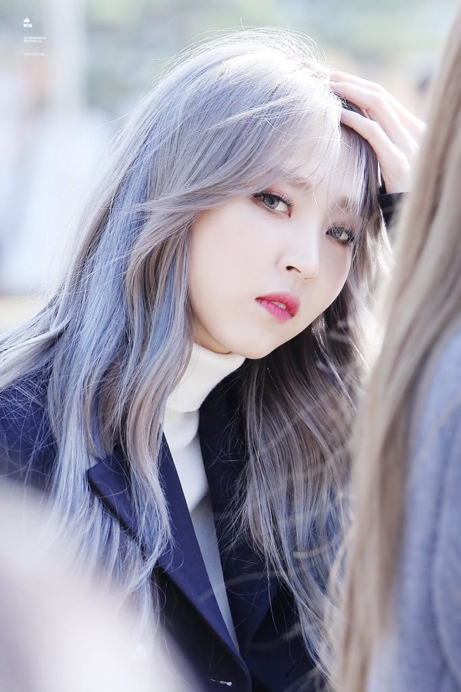

Moon Byul-yi (born December 22, 1992),better known by the mononym Moonbyul, is a South Korean rapper, singer, songwriter and actress. 
She is the main rapper of South Korean girl group Mamamoo.
In May 2018, Moonbyul made her debut as solo artist with releasing digital single, "Selfish".